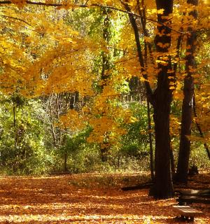

<style type="text/css">
/* CSS3 Create

Styles CSS liés à la démo:
-> Effets de survol avec transitions et filtres CSS

*/
#article78 ul{
width:302px;
height:320px;
margin:70px auto;
}
#article78 ul li{
list-style:none;
float:left;
width:141px;
height:150px;
margin:5px;
}
#article78 ul li:nth-child(3){
clear:left;
}
#article78 ul li img{
position:absolute;
z-index:1;
height:150px !important;width:auto !important;
margin:0;
box-shadow:0 0 3px black;
-webkit-transition:all .5s cubic-bezier(.6,2,.4,1);
-moz-transition:all .5s cubic-bezier(.6,2,.4,1);
-ms-transition:all .5s cubic-bezier(.6,2,.4,1);
-o-transition:all .5s cubic-bezier(.6,2,.4,1);
transition:all .5s cubic-bezier(.6,2,.4,1);
}
#article78 ul li:hover img{
z-index:5;
-webkit-transform: scale(1.5);
-moz-transform: scale(1.5);
-ms-transform: scale(1.5);
-o-transform: scale(1.5);
transform: scale(1.5);
box-shadow:0 0 10px black;
}
#article78 ul:hover li img:not(:hover) {
-webkit-filter: grayscale(1) blur(5px);
-moz-filter: grayscale(1) blur(5px);
-ms-filter: grayscale(1) blur(5px);
-o-filter: grayscale(1) blur(5px);
filter: grayscale(1) blur(5px);
}
</style>

<section id="article78" class="crayon article-css-78 demoTime">
                            <ul>
          <li></li>
          <li></li>
          <li></li>
          <li></li>
     </ul>          
</section>